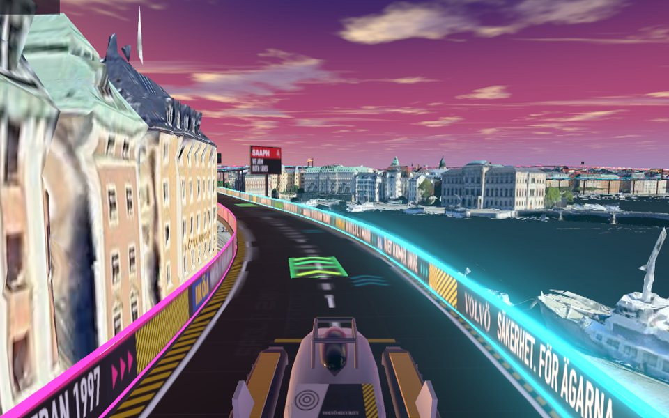
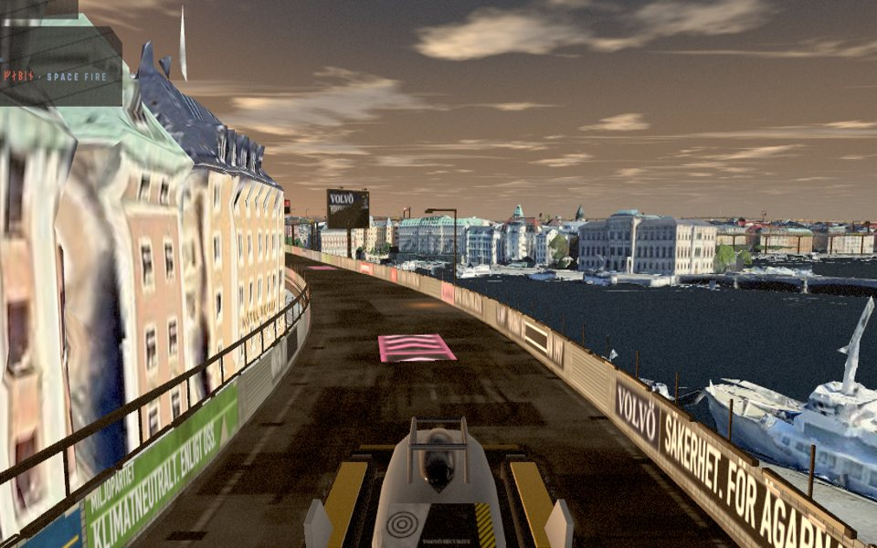

Den här versionen streamar Google Photorealistic 3D Tiles via Cesium ion — riktiga Stockholm i fotogrammetri. Gratis Cesium ion-konto, inget kort:
Tokenen sparas bara i din webbläsares localStorage, skickas endast till Cesium.
Rensa med ?reset i URL:en.

2097 som reklamfilmen lovade: neonbana, magentahimmel, upplysta skyltar.

Samma Stockholm, begagnat: gamla Slussen, lysrör, natriumljus, affischer på kaklet.
Google Photorealistic 3D Tiles · kalibrerar banhöjd mot gatunivå
GRAND TOUR · Södermalm → Gamla stan → Norrmalm → Östermalm → Kungsholmen · 16 km